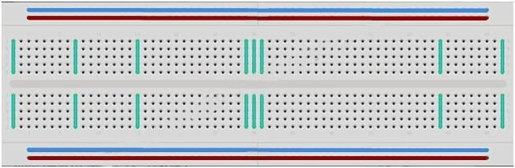
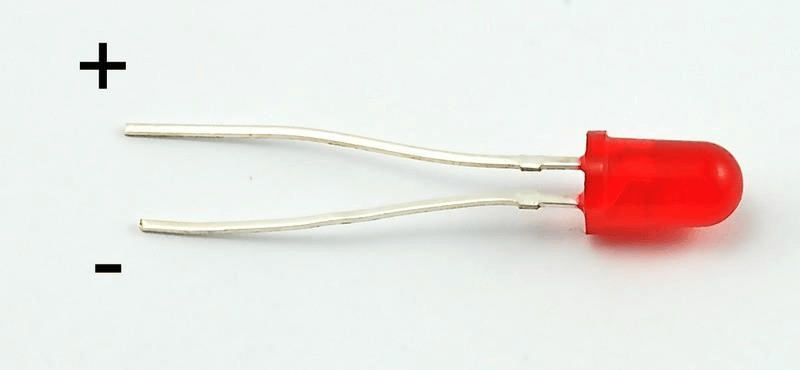
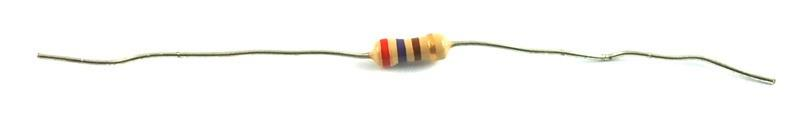
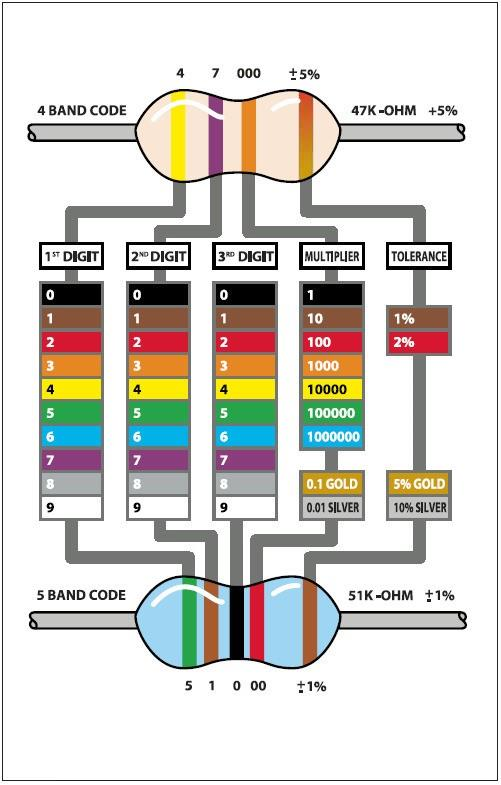
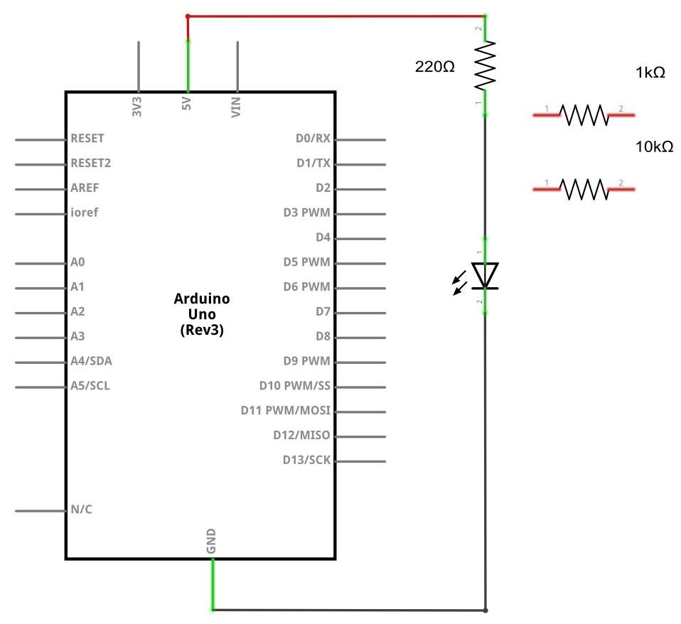
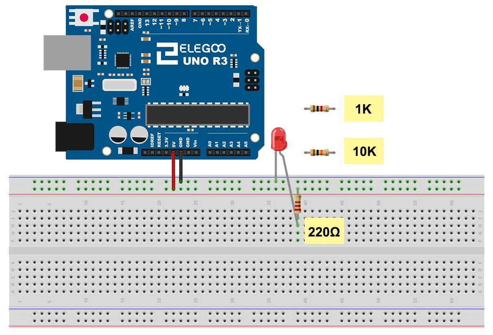
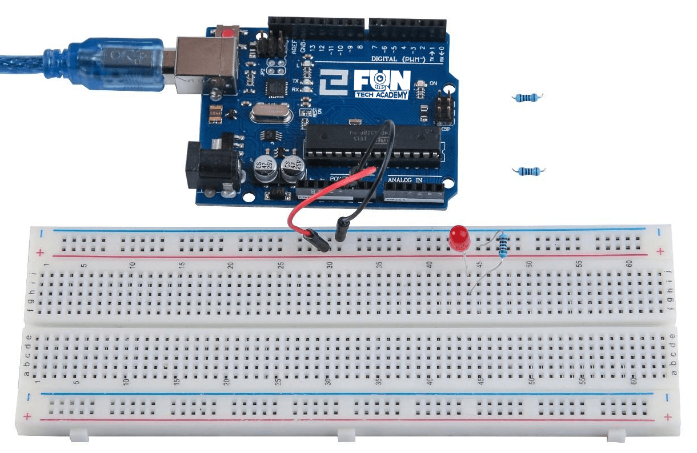
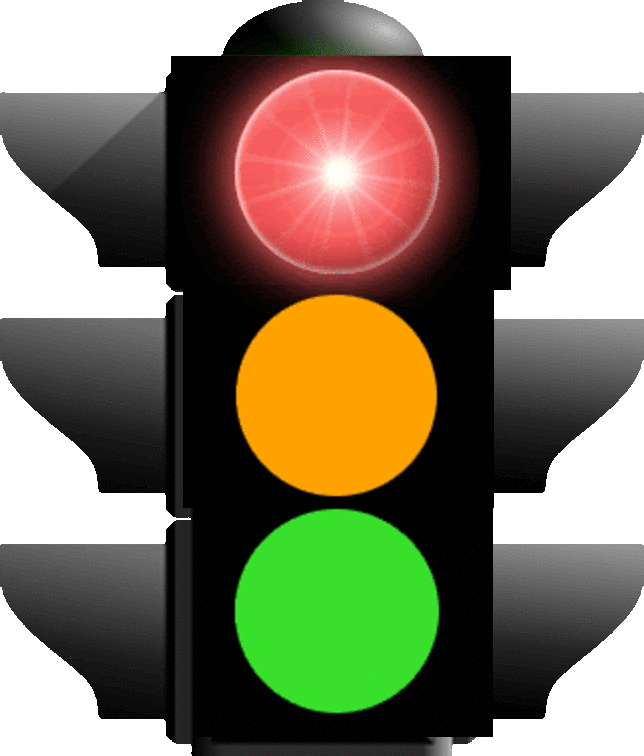
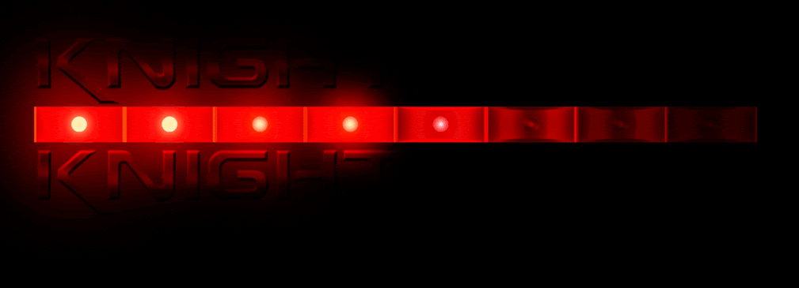

En este tema aprenderemos a cómo cambiar el brillo de un LED usando diferentes valores de resistencia.
(1) x Placa Arduino
(1) x LED rojo de 5mm
(1) x resistencia de 220 ohm
(1) x resistencia de 1 k ohm
(1) x resistencia de 10 k ohm
(2) x M M cables (cables de puente macho a macho)
Un protoboard permite crear circuitos prototipo rápidamente, sin necesidad de soldar las conexiones. A continuación un ejemplo.

Las protoboards vienen en varios tamaños y configuraciones. La clase más simple es sólo una rejilla de agujeros
en un bloque de plástico. En el interior son tiras de metal que proporcionan una conexión eléctrica entre los
agujeros en las filas más cortas. Empujando las patillas de dos componentes diferentes de la misma fila se unen
entre ellos eléctricamente. Un canal profundo, corriendo por el centro indica que hay una rotura en las
conexiones, lo que significa que se puede insertar un chip con las patillas a ambos lados del canal sin que los
lados estén conectados.
Algunas protoboards tienen dos tiras de agujeros que corren a lo largo de los bordes laterales del tablero que
están separados de la red principal. Éstos proporcionan una manera para conectar una tensión común. Son
generalmente en pares para + 5 voltios y tierra. Estas tiras se denominan carriles y le permiten alimentar a
muchos componentes o puntos en el tablero.
Si bien son protoboards para prototipos, tienen algunas limitaciones. Porque las conexiones son temporales y de
acople, no son tan fiables como conexiones soldadas. Si tienes problemas intermitentes con un circuito, puede ser
debido a una mala conexión en una protoboard.
El diodo LED es un gran indicador que utilizando muy poca electricidad durará para siempre. En este tema, usarás
tal vez el más común de todos los LEDs: un LED de 5mm de color rojo. 5mm se refiere al diámetro del LED. Otros
tamaños comunes son 3mm y 10mm. Los LEDs tienen un polo positivo y otro negativo.
Directamente no se puede conectar un LED a una batería o fuente de tensión ya que hay que colocarlo con una
resistencia para limitar la cantidad de corriente que fluye a través de él, de lo contrario se quemará.

Si no utilizas una resistencia con un LED, entonces podría quemarse casi de inmediato, ya que como fluirá
demasiada corriente a través él se calentará y destruirá la soldadura donde se produce la luz.
Hay dos maneras de saber cual es el positivo o el negativo del LED. La primera es saber que la pata positiva
es la mas larga y la segunda es que donde la pata del negativo cuando entra en el cuerpo del LED, hay un
borde plano.
Como su propio nombre indica, las resistencias resisten el flujo de electricidad. Cuanto mayor sea el valor de
la resistencia, resiste más y menos corriente fluirá a través de ella.
Vamos a usar esto para controlar cuánta electricidad fluye a través del LED y por lo tanto, ver cómo afecta
en el brillo.

Pero primero, más sobre resistencias...
La unidad de resistencia se denomina Ohm, que se abrevia generalmente con Ω (la letra griega
Omega).
Un Ohm es un valor muy bajo de resistencia, por lo que usaremos múltiplos mayores como los valores de
resistencias en kΩ (1.000 Ω) y MΩ (1.000.000 Ω). Éstos se llaman kilo-ohmios y
mega-ohmios respectivamente.
En este tema, vamos a utilizar tres valores diferentes de resistencia: 220Ω, 1kΩ y 10kΩ.
Estas resistencias parecen iguales, sin embargo tienen rayas de colores diferentes en ellas. Estas rayas
indican el valor de la resistencia.
El código de color de las resistencias tiene tres franjas de colores y luego una banda de oro en un
extremo.

A diferencia de los LEDs, las resistencias no tienen un polo positivo y otro negativo, por lo que se pueden
conectar en cualquier posición.
Puedes leer el anillo de color en la resistencia directamente para determinar su valor o puedes usar un
multímetro digital para saber los ohmios de la resistencia.
Cuando creamos componentes electrónicos, normalmente nos guiaremos de su esquema eléctrico, este diagrama esta desarrollado para ese componente en concreto y se deben respetar al pie de la letra todas las indicaciones.

Estos diagramas nos permiten orientarnos en las conexiones, sin necesidad de saber interpretar un esquema eléctrico de alto nivel, a pesar de que no es un diagrama tan especializado como el anterior, debemos respetar también sus indicaciones al pie de la letra.

La placa de Arduino es una conveniente fuente de 5 voltios, que vamos a utilizar para alimentar el LED y la
resistencia. No necesitas hacer nada con la placa, salvo conectarla al cable USB.
Con la resistencia de 220 Ω colocada en su lugar correspondiente, el LED debe ser bastante brillante.
Si cambiamos la resistencia de 220 Ω por la resistencia de 1 kΩ, el LED reducirá su intensidad un
poco.
Por último, con la resistencia de 10 kΩ en su lugar, el LED estará casi invisible.
Si retiraremos el cable de puente rojo de la placa, el LED se apagará por completo y si volvemos a conectarlo
a la placa, se encenderá de nuevo el LED, por lo que el cable rojo actuará como un interruptor.
Por el momento, tienes 5V que van a una pata de la resistencia, la otra pata de la resistencia va al lado
positivo del LED y el otro lado del LED va a GND (tierra).
Más o menos deberíamos tener nuestro proyecto como se ve en la imagen, de lo contrario revisa los pasos anteriores.

- Tenemos que realizar un semáforo, en el que tengamos un LED de color rojo, otro amarillo y otro verde. Se encendea el LED rojo durante dos segundos, después el amarillo durante un segundo y al final el de color verde durante otros dos segundos y asi continuamente.

- Simularemos las luces del frontal del coche fantástico. Para ello utilizaremos 4 leds rojos y se irán alternando como en la imagen.

En primer lugar, haremos parpadear a los LED en secuencia de uno en uno, utilizando sólo las funciones:
digitalWrite(pinNum,HIGH/LOW)
y
delay(time)
En segundo lugar, los haremos parpadear con menos líneas de código mediante la secuencia de control
for([inicialización];[condición];[incremento])
En último lugar, lo haremos para que los LEDs parpadeen de una forma más suave.